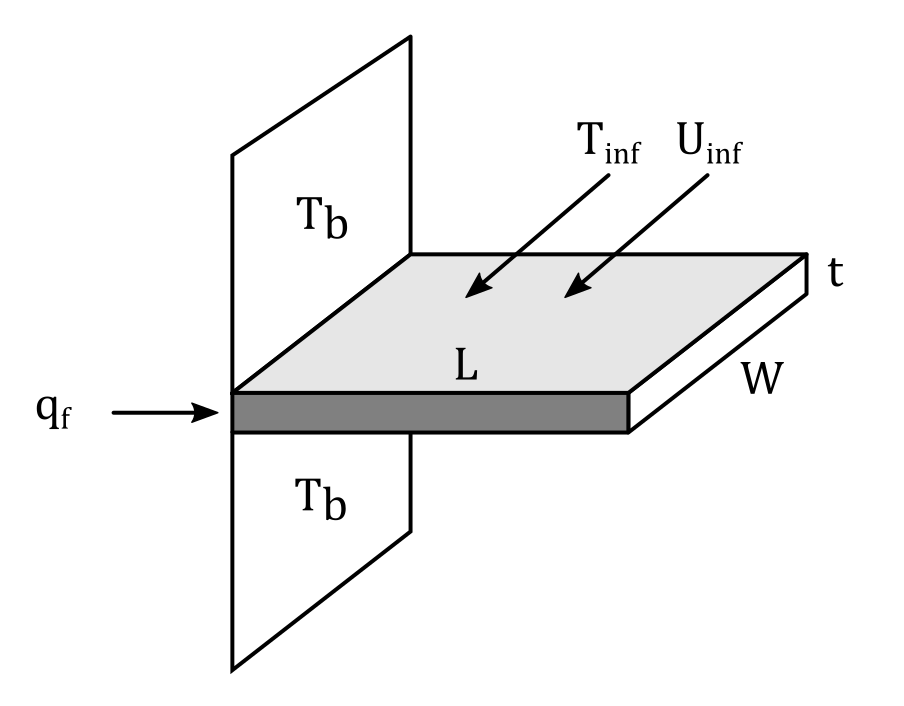

Return to Home Page
Project Details
Analytical solution code, grid independence study, comparison to analytical solution
Navigation Panel
This page is long. If you want to skip to a particular section, click on one of the links below
- Skip to Simulation Setup
- Skip to grid independence study
- Skip to CFD comparison to analytical solution
Analytical Solution
The analytical solution for flow over an isothermal plate with an adiabatic tip. The details behind the derivation of the equation may be viewed in chapter 2 of "Thermal Design: Heat Sinks, Thermoelectrics, Heat Pipes, Compact Heat Exchangers, and Solar Cells" by H.S. Lee. To shorten things, only the final equation for heat rate is presented here.
`q_f = sqrt(h*2*(W+t)*k_(al)*t)*(T_(b)-T_(\infty))*tanh((V/W)(2h/(k_(al)t^3))^(1/2))`
where `V` is volume of the fin, `k_(al)` is thermal conductivity of the aluminum fin, and `h` is the convective heat transfer coefficient (which may be calculated as shown in the code below). The heat rate `q_f` is plotted for many different values of fin thickness, shown in the plot below.
import numpy as np
import matplotlib.pyplot as plt
#Calculate Reynolds number from Free stream velocity(U), kinematic viscosity (v), and characteristic length
def Re(U,nu,L):
return U * L / nu
#Calculate Prandtl Number
def Pr(mu,Cp,k):
return mu * Cp / k
#kinematic viscosity from density (rho) and dynamic viscosity (mu)
def nu(rho,mu):
return mu / rho
def mu(rho,nu):
return nu * rho
#Calculate Nusselt Number over isothermal plate: the dimensionless heat transfer coefficient
# Equation 1.52,1.57
def NusseltPlate(h,L,kf,Re,Pr):
if h*L*kf == 0 and Re*Pr == 0:
raise TypeError('Incorrect use of Nu() function: Type FunctionHelp() or th.FunctionHelp() for help on how to use this function')
elif h*L*kf != 0:
output = h * L / kf
else:
if Re < 5000:
if Pr <= 0.6:
raise TypeError('This function uses correlations that expect your Prandlt Number to be greater than 0.6')
else:
output = 0.664*Re**(0.5)*Pr**(1/3)
elif Re < 10**8:
if Pr <= 0.6 or Pr >= 60:
raise TypeError('This function uses correlations that expect 0.6<=Pr<=60')
else:
output = 0.037*Re**(0.8)*Pr**(1/3)
else:
raise TypeError('This function uses correlations that expect your Reynolds Number to be less than 10^8')
return output
#ALL IN SI UNITS
t0 = 3.28*10**(-5) #initial thickness of plate
U = 1.5 #free stream velocity of air flowing over plate
k_al = 237 #thermal conductivity of aluminum
k_air = 0.0283 #thermal conductivity of air
Prt = 0.703 #Prandtl number
nu = 23.42 * 10**(-6) #kinematic viscosity of air
L = 2.5*10**(-2) #Width of fin
b = 5.4*10**(-2) # Extrusion length of fin
h = k_air/L*NusseltPlate(0,0,k_air,Re(U,nu,L),Prt)
print(h)
Tb = 85
Tamb = 22
theta_b = Tb-Tamb
#initialize some arrays which will store thickness and heat rate
n = 100
tA = np.zeros(n)
qA = np.zeros(n)
for i in range(1,n):
tA[i] = t0*i
Ac = tA[i]*L
P = 2*(L+tA[i]) #perimeter
#print(tA[i])
V = b*tA[i]*L #Volume of fin
mb = b*(P*h/k_al/(Ac))**0.5
a = (h*P*k_al*L*tA[i])**(0.5)*theta_b
qA[i] = a*np.tanh(mb) #heat rate
#print(qA[i])
plt.plot(tA,qA)
plt.title('Heat Rate plot')
plt.ylabel('q, Watts')
plt.xlabel('Thickness, m')
plt.axis([0, max(tA), 0, 1.2*max(qA)])
plt.show()FVM Simulation Setup
OpenFOAM, an open source FVM simulation software package, is used to simulate flow over a plate with an adiabatic tip. Here, I am using an already existing solver called chtMultiRegionFoam. It is a conjugate heat transfer solver that allows for coupled thermal simulation between fluids and solids. In this setup, I have two regions: the solid fin and the air flowing over the fin. For more details on boundary conditions, go back to the previous page and click on the link which brings you to the tutorial on how to set up this problem in OpenFOAM.

Grid Independence Study
A grid independence study is carried out on 3 different sized grids. x,y,and z node count is doubled for the fluid. For the solid, x and y node sizes are doubled, though z node count is left constant. This is because I am not really expecting much change of heat transfer solution in the z direction for the solid, so I didn't really see the point in increasing computation in that area.
The heat transfer through the left side of the fin is compared for all cases. The heat rate may be simply calculated by the conduction equation: `q_f=kA(partialT)/(partialt)`. Since the gradient of temperature is not calculated (only temperature itself is calculated from the simulation), ` (partialT)/(partialt)` on the left face of the solid is approximated by a forward finite difference on the grid from the FVM simulation.
The results from the independence study can be seen below. The difference between the heat transfer for 5632 and 38912 nodes is insignificant (at least for the purpose of this study, which is just to compare heat transfer to the analytical solution). Because of this observation, 5632 nodes are used for all simulations moving forward to save on computation time. I am running all of these simulations on a 10 year old, 2 gig ram laptop, so I'm trying to keep these as simple as possible.
Note that for the files above, you would only need to type ./Allrun in the terminal to run this grid independence study. I have set up this script to automatically generate 3 cases from the base folder.
Comparison to Analytical solution
Using the 5632 node mesh setup, 10 different geometries are prepared to compare to the analytical solution, with plate thicknesses ranging from 0.1 to 1.0 mm in thickness. Note that these are symmetric cases being setup, so the actual thickness is 0.2 to 2.0 mm.
The simulations above are easily setup and run automatically by using a script that I created. The script sets up the apppropriate geometry thickness, runs the case, and grabs the heat transfer through the left side of each plate after the simulation is complete. After this is done, I plotted the heat transfer compared to the analytical solution.
As can be seen above, the comparison is "decent," but not exact. Three things could be going wrong here that prevent it from being closer to the exact solution: (1.) dt/dx is not being approximated accurately, (2.) the grid is not refined enough for later cases with larger amounts of heat transfer(I only performed a grid independence study for thickness of 0.1 mm), or (3.) I am not simulating the transient case long enough to truly reach steady state